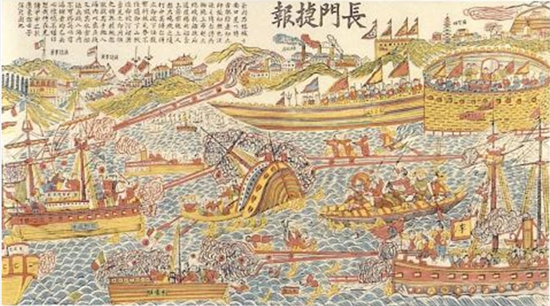
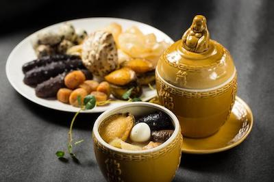

History
Fuzhou was occupied by the People's Liberation Army with little resistance in 1949. In the 1950s, the city was on the front line of the conflict with KMT in Taiwan, as hostile KMT aircrafts frequently bombed the city. A bombing in 1955 was the most serious one, killing hundreds of people. Fuzhou was also involved in a violent mass chaos during the Cultural Revolution. Different groups of Red Guards fought with each other using guns on the streets of the city, and even attacking the People's Liberation Army.
Under the reform and opening policy since the late 1970s, Fuzhou has developed rapidly. In 1982, Fuzhou became the first city in China where the stored program control was introduced, which marked a milestone in the history of telecommunications in China. In 1984, Fuzhou was chosen as one of the first branches of Open Coastal Cities by the Central Government. In 1993, a raging fire swept through a textile factory in Fuzhou claiming the lives of 60 workers. In 2005 floodwaters from Typhoon Longwang swept away a military school, killing at least 80 paramilitary officers.
Demographics

Han (Chinese) make up nearly all of the population. The largest ethnic minority group consists of She tribespeople (also known as Ho Ne, or Huonie). Those who live in Fujian are located in the hilly hinterland of the northern coast. Most of them are distributed in the area of Ningde, including Fu’an, Xiapu, and Fuding; most are engaged in farming.
Other minority groups include the Miao (also called Hmong), Hui (Chinese Muslims), and Manchu. The Miao are distributed in the mountainous interior of northern Fujian; the Hui live in the cities of Fuzhou, Xiamen, Putian, and Quanzhou; and the Manchu live principally in Fuzhou, being descendants of Manchu soldiers who garrisoned Chinese cities during the Qing (Manchu) dynasty. The She people, culturally affiliated with the Miao and the Yao (Mian), are distributed in the northern mountains, from the coast to the interior, and are even found beyond the Fujian border in Jiangxi and southern Zhejiang. The “boat people” (Tanka or Danjia), who live on boats in the streams and estuaries, are not recognized as a separate group.
Cuisine
Fuzhou dishes are representative of the Min (short for Fujian Province) Cuisine that is very much a feature of Fujian Province and is one of the Eight Major Cuisines of China. One of the most renowned Fuzhou dishes is Fotiaoqiang (Buddha Jumps Over the wall), a traditional Min Cuisine recipe. It is said to have been created by the wife of a Fuzhou official, who in 1876 was entertaining an important member of the Fujian Government in his home. His wife, who was an excellent cook placed chicken, duck, pork and seafood together into an empty wine jar to simmer. When the dish was served, the visitor praised the aroma and the delicious flavor and was so impressing that he asked the cook Zheng Chunfa to learn how the food was prepared.
Subsequently, Zheng Chunfa adapted the recipe and finally opened a restaurant where he served it to the delight of his customers. When he opened the jar in which it had been cooked, the diners were so taken with the gorgeous smell that one of them wrote a poem about it. In it he said that the smell was so wonderful that even a Buddha would stop pattering and jump over the wall to have a taste.